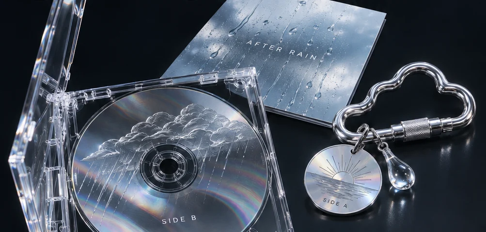

네 사람이 함께 만드는 음악.( 문태준 · 채유성 · 하진우 · 채류현 )
( 결락 )
우리는 닿는 순간부터 번지고 있었다.
결( Gyeol )
물의 결, 숨의 결. 선이 지나간 자리에 남는 무늬.
락( Lak )
떨어지는 꽃, 그리고 음악. 즐기는 쪽의 락.


( Intro Film — 1부 )
못: 비가 맺히지
않는 곳
수조를 누르면 크게 봅니다. 영상은 준비 중이라 지금은 스틸 한 장이 들어 있습니다.
( 못: 비가 맺히지 않는 곳 — 영상 준비 중 )
떨어진 꽃도
결국 떠 있다.
( 백합 — 동백 — 수국 — 능소화 )
꽃을 누르면 그 사람에게 갑니다
( The Members )
Members( 04 )
꽃이 핀 순서대로. 백합, 동백, 수국, 그리고 가장 깊은 곳에서 올라온 능소화.
( Music — 1st Album )
장마의
잔향

사이트에서는 30초 미리듣기만 됩니다. 내려받기는 없고, 정식 음원은 유통 뒤에 곡마다 링크를 붙입니다.
( World · Notes )
Notes기록
인터뷰에서 흘린 말, 작업 노트, 곡 소개를 여기에 모읍니다. 지금은 원고가 있는 두 사람의 말만 먼저 실었습니다.
“애들아, 날아보자!”( 채유성 — 동백 )
“오늘도 맑고 내일도 맑을 거예요! 우리 같이 나갈래요?”( 하진우 — 수국 )